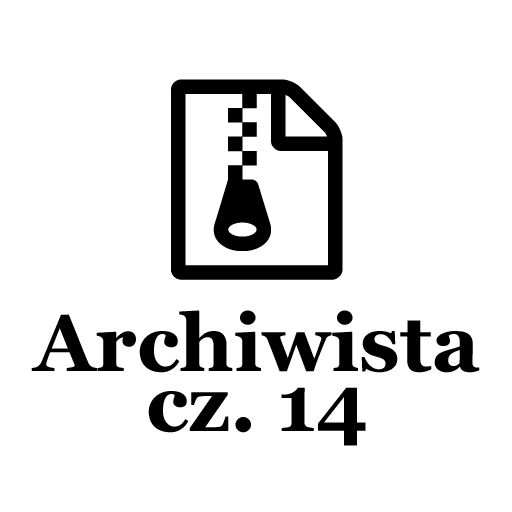
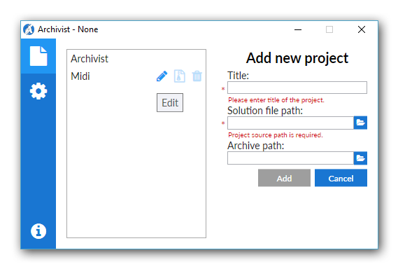
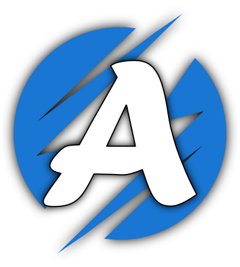

Post archive
Archiwista [cz. 14 – Koniec]

Po 14 tygodniach pracy nadszedł ten moment. W końcu Archiwista został ukończony. Oczywiście kończenie aplikacji nie mogło się odbyć bez odkrycia kilku nowych błędów. Dobrze, że zostały okryte, zanim aplikacja została oddana do użytku, dzięki czemu mogłem je od razu naprawić.
Download
Na chwilę obecną aplikację można pobrać klikając tutaj. W przyszłości zostanie stworzona specjalna podstrona na moim blogu, na której będą znajdować się aktualne wersje aplikacji do pobrania.

Dokumentacja
Podczas pisania aplikacji dodawałem komentarze przy każdej właściwości, metodzie, konstruktorze. Aby później wygenerować dokumentację do aplikacji. Dzięki niej, jeżeli ktoś będzie chciał zmodyfikować jakąś funkcjonalność bądź dowiedzieć się jak coś działa. Aby wygenerować dokumentację skorzystałem z aplikacji Doxygen. Tak wygenerowaną dokumentację można zobaczyć w repozytorium na githubie.
Logo
Jako że nie jestem wyjątkowo utalentowany artystycznie, nad logiem aplikacji myślałem od samego początku. Nie przychodziło mi to łatwo. Pomysłów miałem parę — folder z kłódką, folder ze strzałką, przeróżne kolory i rozmiary. Niestety większość pomysłów wylądowała w koszu. Postawiłem sobie deadline, aby aplikacja została skończona w tym tygodniu, więc musiałem pójść na kompromis i wybrać jakąś wersję. Zdecydowałem się na logo z pierwszą literą nazwy aplikacji na okrągłym tle w odcieniu bazowym aplikacji.

Kończąc
Trochę czasu zajęło mi tworzenie tej aplikacji, ale dowiedziałem się sporo nowych rzeczy. Poznałem nowe konstrukcje i zobaczyłem nowe błędy. W przyszłości zapewne dodam obsługę innych IDE, dzięki czemu większe grono użytkowników będzie mogło korzystać z mojej aplikacji. Uznaję projekt za zakończony.
Jeden projekt się kończy, a kolejny zaczyna. Jeżeli wszystko pójdzie zgodnie z planem. Następną aplikacją, którą napiszę będzie aplikacja typu widget wyświetlająca plan zajęć z systemu uczelnianego. Podobną aplikację napisałem już podczas zajęć. Od tamtego czasu zdobyłem już trochę doświadczenia i jestem pewien, że tym razem wyjdzie jeszcze lepiej niż ostatnio. Tym razem chciałbym wykorzystać dodatkowe możliwości platformy .NET i wykorzystać jedną bibliotekę do stworzenia aplikacji na komputery, jak i urządzenia mobilne.
[KodNaGit]